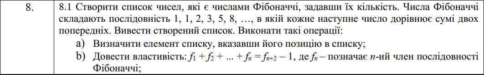
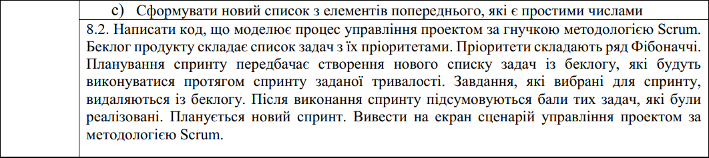
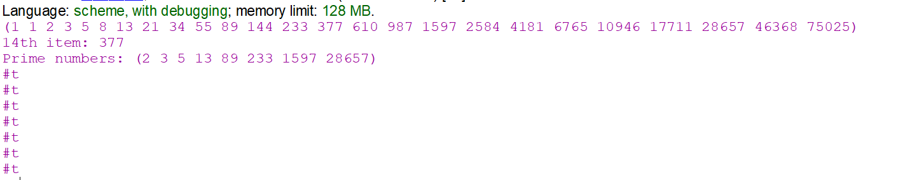
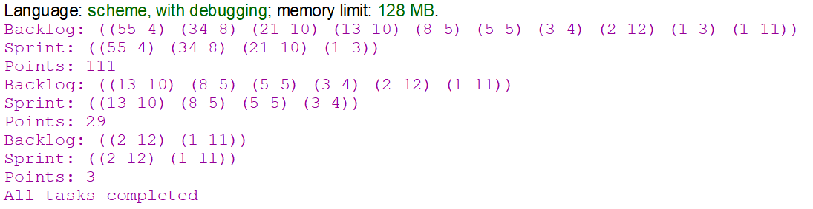

Функціональне програмування
Факультет інформаційних технологій
Кафедра програмних систем та технологій
Лабораторна робота 4
Програмування списків мовами функціонального програмування
Примачук Максим Григорович
Група: ІПЗ-44мс
Викладач: Ніколаєнко А.Ю.
2023
Мета
Опанувати теоретичні основи використання списків функціональними мовами та розробити програми обробки списків
Варіант 8
 Хід роботи
Завдання 1
Код
Посилання
(define (fibTail n)
(define (fibTailHelper n a b)
(cond
((= n 1) a)
((= n 2) b)
(else
(fibTailHelper (- n 1) b (+ a b))
)
)
)
(fibTailHelper n 1 1)
)
; створення списку чисел Фібоначчі
(define (generate-fib n)
(define (generate-fib-helper n)
(if (= n 0)
'()
(cons (fibTail n) (generate-fib-helper (- n 1))))
)
(reverse (generate-fib-helper n))
)
; визначення елемента списку за його позицією
(define (get-item lst n)
(cond
((= n 1) (car lst))
(else
(get-item (cdr lst) (- n 1))
)
)
)
; сума перших n елементів списку
(define (sum-lst lst n)
(cond
((= n 1) (car lst))
(else
(+ (get-item lst n) (sum-lst lst (- n 1)))
)
)
)
; перевірка твердження
(define (prove-statement lst n)
(= (sum-lst lst n) (- (fibTail (+ n 2)) 1))
)
; перевірка того, чи є число простим
(define (is-prime n i)
(cond
((or (< n 2) (and (= (remainder n i) 0) (<= i (sqrt n))))= #f)
((> i (sqrt n)))
(else
(is-prime n (+ i 1))
)
)
)
; створення списку простих чисел на основі заданого списку
(define (get-primes lst res)
(cond
((null? lst) res)
(else
(cond
((is-prime (car lst) 2) (get-primes (cdr lst) (append res (list (car lst)))))
(else
(get-primes (cdr lst) res)
)
)
)
)
)
(display (generate-fib 25))
(newline)
(display "14th item: ")
(display (get-item (generate-fib 25) 14))
(newline)
(display "Prime numbers: ")
(display (get-primes (generate-fib 25) '()))
(newline)
(for-each (lambda (x) (display (prove-statement (generate-fib 25) x)) (newline)) '(4 6 8 10 15 20 23))
Результат
Завдання 2
Беклог являє собою список пар (пріоритет тривалість), де пріоритет число Фібоначчі, А тривалість - випадкове число між 2 і 15. Для спринту першочергово обираються завдання із вищим пріоритетом.
Код
Посилання
(define (fib n)
(if (< n 2)
n
(+ (fib (- n 1)) (fib (- n 2)))))
; Функція для генерування випадкового числа в заданому діапазоні
(define (random-between low high)
(+ low (random (- high low +1)))
)
; Функція для створення беклогу з n завдань, кожне з яких має пріоритет (число Фібоначчі)
; та випадкову тривалість виконання
(define (create-backlog n)
(if (= n 0)
'()
(let ((priority (fib n))
(duration (random-between 2 15)))
(cons (list priority duration) (create-backlog (- n 1)))
)
)
)
(define backlog (create-backlog 10))
; Функція для планування спринту шляхом вибору завдань з беклогу, доки їх сумарна тривалість
; не зрівняється з тривалістю спринту
(define (plan-sprint backlog sprint-duration)
(if (or (null? backlog) (<= sprint-duration 0))
'()
(let ((task (car backlog))
(remaining-backlog (cdr backlog)))
(let ((task-duration (cadr task)))
(if (<= task-duration sprint-duration)
(cons task (plan-sprint remaining-backlog (- sprint-duration task-duration)))
(plan-sprint remaining-backlog sprint-duration)
)
)
)
)
)
; Функція для виконання спринту шляхом підрахунку загальних балів (сума пріоритетів завдань у спринті)
(define (execute-sprint sprint)
(if (null? sprint)
0
(+ (car (car sprint)) (execute-sprint (cdr sprint)))
)
)
; Функція для видалення завдань у спринті з беклогу
(define (remove-tasks backlog tasks-to-remove)
(if (null? backlog)
'()
(let ((task (car backlog))
(remaining-backlog (cdr backlog)))
(if (member task tasks-to-remove)
(remove-tasks remaining-backlog tasks-to-remove)
(cons task (remove-tasks remaining-backlog tasks-to-remove)))
)
)
)
; Функція для управління процесом Scrum шляхом планування спринтів до моменту,
; коли в беклозі не залишиться жодної задачі
(define (scrum backlog sprint-duration)
(let ((sprint (plan-sprint backlog sprint-duration)))
(if (null? sprint)
(display "All tasks completed")
(begin
(display "Backlog: ")
(display backlog)
(newline)
(display "Sprint: ")
(display sprint)
(newline)
(display "Points: ")
(display (execute-sprint sprint))
(newline)
(scrum (remove-tasks backlog sprint) sprint-duration))
)
)
)
(scrum backlog 25)
Результат
Висновок
При виконанні лабораторної роботи створено функцію, що генерує список із n чисел Фібоначчі; функцію, що генерує список із простих чисел на основі заданого списку; функцію, що повертає n-й елемент списку та функцію, що обчислює суму перших n елементів списку. Також доведено твердження, що f1 + f2 + ... + fn = fn+2 – 1, де fn – позначає n-ий член послідовності Фібоначчі.
Створено модель роботи за методом Scrum, де існує список задач, які потрібно виконати протягом певної кількості спринтів заданої тривалості.